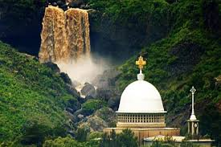
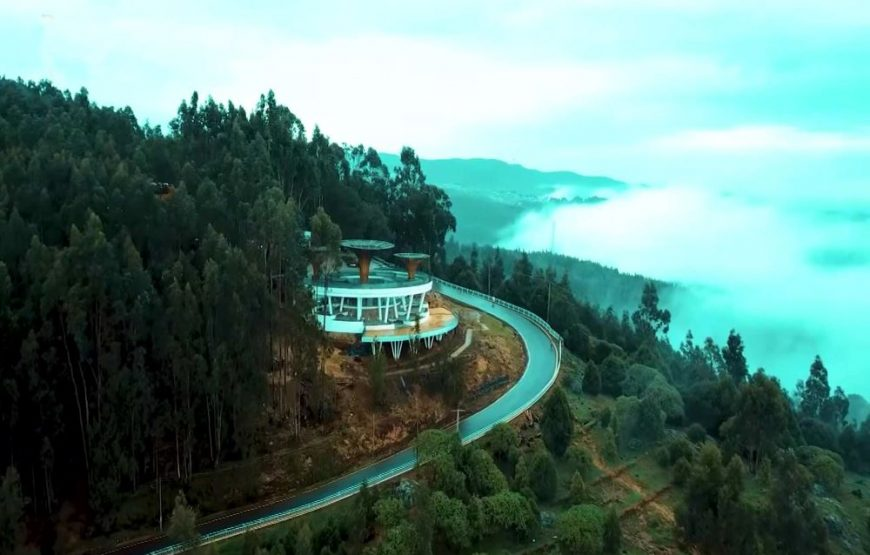

Exploring Areas around Addis Ababa: Visited nearby attractions including Debre Libanos and immersing in the rich heritage and beautiful landscapes of the region.

Hiking the Entoto Mountains: Completed the scenic trek in the Entoto Mountains near Addis Ababa, experiencing stunning views and the rich history of the area.
